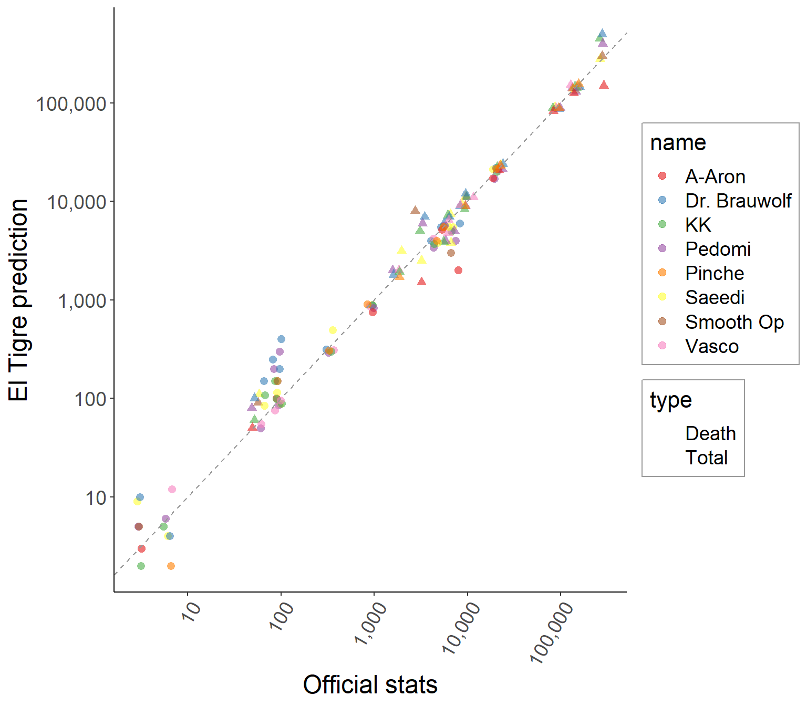
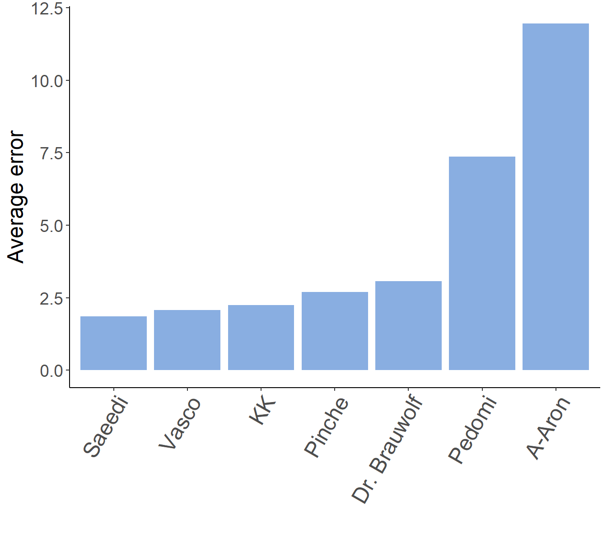
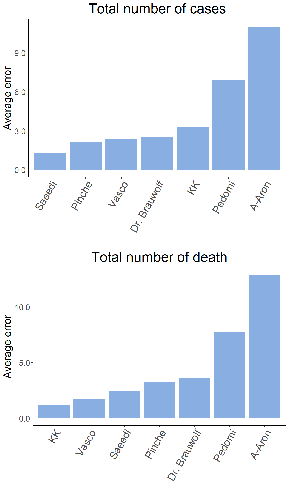
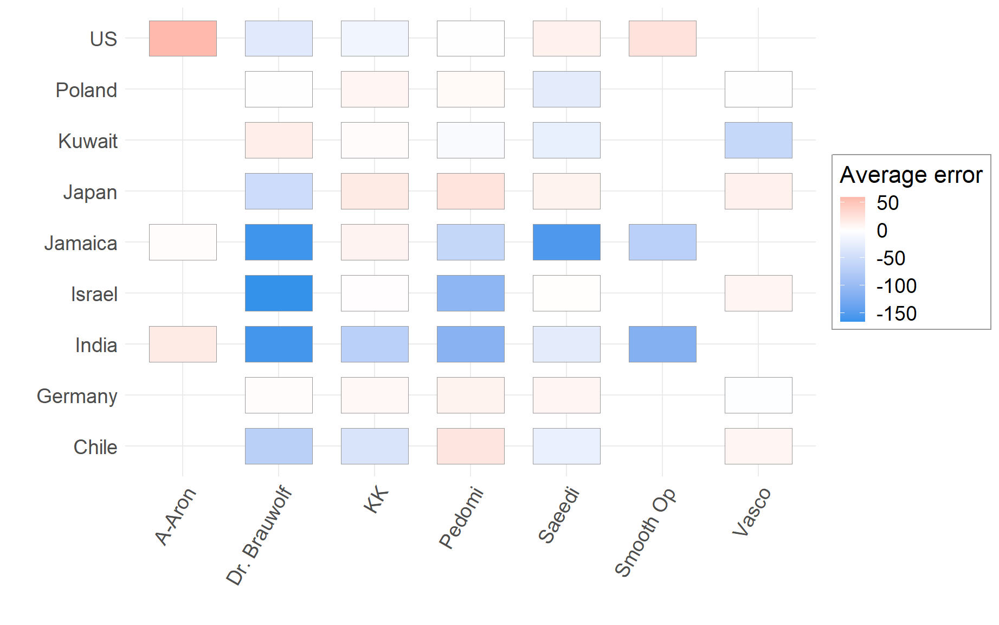
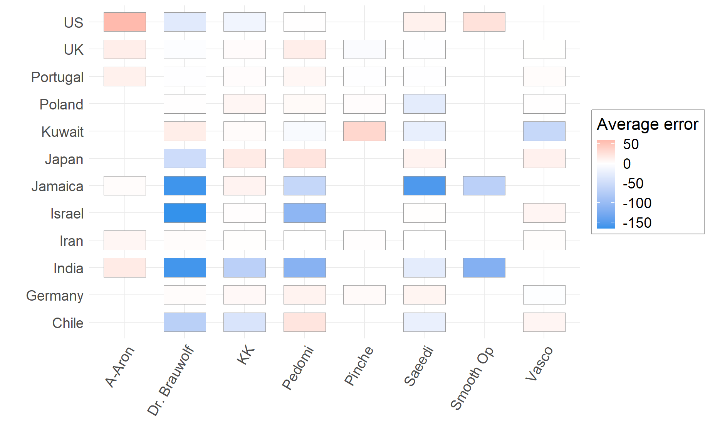

El Tigre Weekly Prediction
April 4, 2020
“Football is like chess only without the dice” - Lukas Podolski
1 Introduction
We have used the prediction of previous week and compare them against the John Hopkins official data taken from their website (https://www.worldometers.info/coronavirus/) at around noone. The official numbers are shown bellow.
| country | date | Death | Total |
|---|---|---|---|
| India | 4/4/2020 | 86 | 3082 |
| Jamaica | 4/4/2020 | 3 | 53 |
| US | 4/4/2020 | 7406 | 277607 |
Next figure shows the predicted values (Y-axis) against the official numbers (X-axis).

2 Calculating errors
2.1 Net error
Each prediction is characterized by an error. Here, error is defined by the following equation:
\(e = y - \hat{y}\)
The negative number indicate pessimistic prediction and positive number an indication of optimisim. Next figure shows the total (sum) of the absolute error (\(\sum_i|y_i|\)) for each participant.
 We can also quantify the total error for each category (total cases and death numbers), separately. This may show different ranking to each predictions.

2.2 Normalized error
It’s also interesting to normalize the error. Instead of large numbers (like US) determines the final ranking, we can try to normalize the errors. In this way, we are making all the predictions comparable.
\[ e = \frac{y - \hat{y}}{y} = 1 - \frac{\hat{y}}{y} \]
For simplicity in understanding the numbers, they were converted to percentage.
We can also quantify the total error for each category (total cases and death numbers), separately. This may show different ranking to each predictions.
2.3 Final results
Therefore, here is the final ranking:
| Ranking | Name | Average error |
|---|---|---|
| 1 | A-Aron | 32.04 |
| 2 | KK | 46.30 |
| 3 | Saeedi | 71.24 |
| 4 | Pedomi | 72.49 |
| 5 | Smooth Op | 73.00 |
| 6 | Dr. Brauwolf | 123.16 |
3 Pessimism
Next we can rank the players by the sum of errors (\(\sum_i e_i\)). It’s an indication of pessimism, if this value is negative. Therefore, we are ranking players based on their level of negativeness!
| Ranking | Name | Mentality |
|---|---|---|
| 1 | Dr. Brauwolf | -116.83 |
| 2 | Pedomi | -57.16 |
| 3 | Saeedi | -56.37 |
| 4 | Smooth Op | -53.17 |
| 5 | KK | -24.36 |
| 6 | A-Aron | 26.61 |
4 Countries
4.1 Player ranking by country
For each country, we have separately ranked players. Bellow how each player performed on each country (x-axis). Interestingly, Smooth Op did very bad for his own country. He had a very pessimistic prediction for India!

We can also see the actual prediction errors:

4.2 Ranking countries by difficulty
Table bellow shows the ranking of countries by the level of difficulties. The hardest country was India, very closely followed by Jamaica. The most optimistic predictions were done for the US!
| Ranking | Country | Average error | Mentality |
|---|---|---|---|
| 3 | India | 89.72 | -78.02 |
| 2 | Jamaica | 77.99 | -71.49 |
| 1 | US | 41.41 | 8.87 |
5 Type
5.1 Prediction error Death vs. Total cases
Prediction error between death and total cases were fairly similar. However, death seemed to be slightly more difficult.
| Ranking | Type | Total error | Mentality |
|---|---|---|---|
| 2 | Death | 78.8 | -46.69 |
| 1 | Total | 60.6 | -47.07 |
6 Next week
We will select up to five countries from the list bellow. This list is genearted by the machine, selecting 10 random countries.
# List of countries
library(countrycode)
set.seed(666)
countries <- codelist$country.name.en
selected_countries <- sample(countries, 10)
print(selected_countries)## [1] "Curaçao" "Japan" "Grenada" "Israel" "Bermuda" "Lithuania"
## [7] "Libya" "Mongolia" "Chile" "Kiribati"